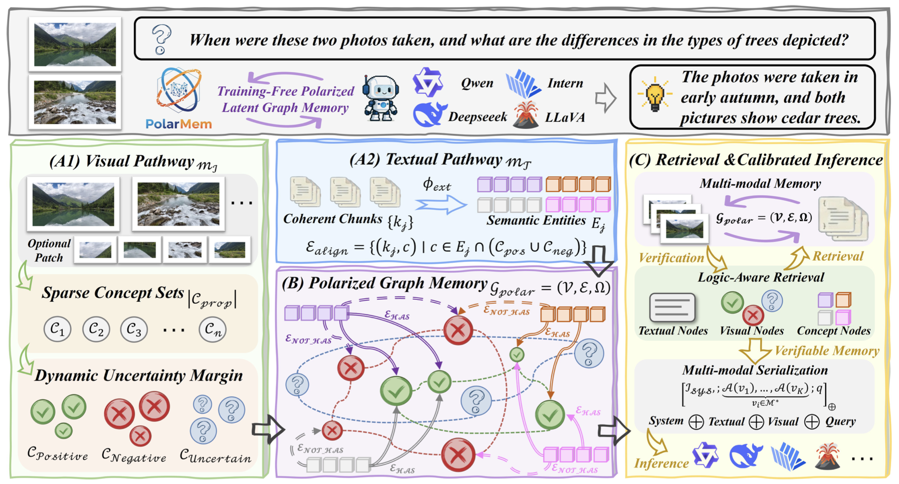
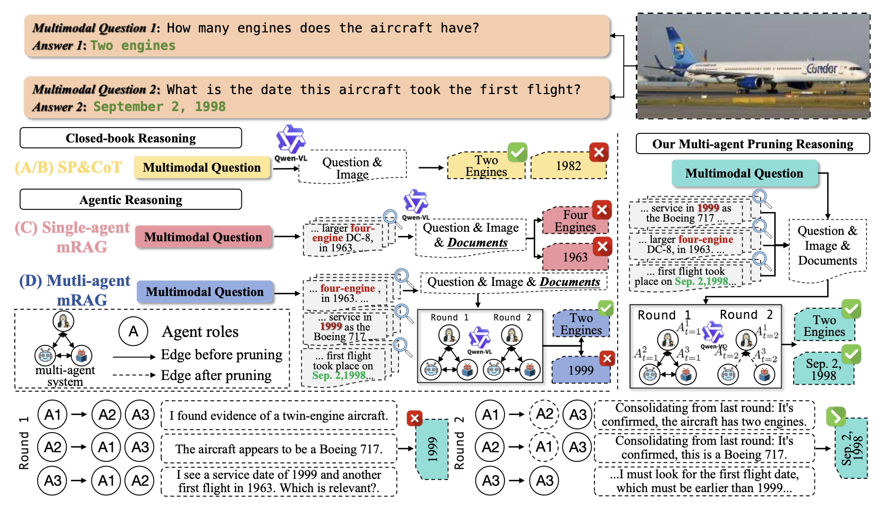
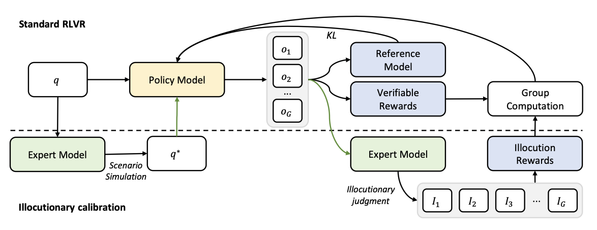
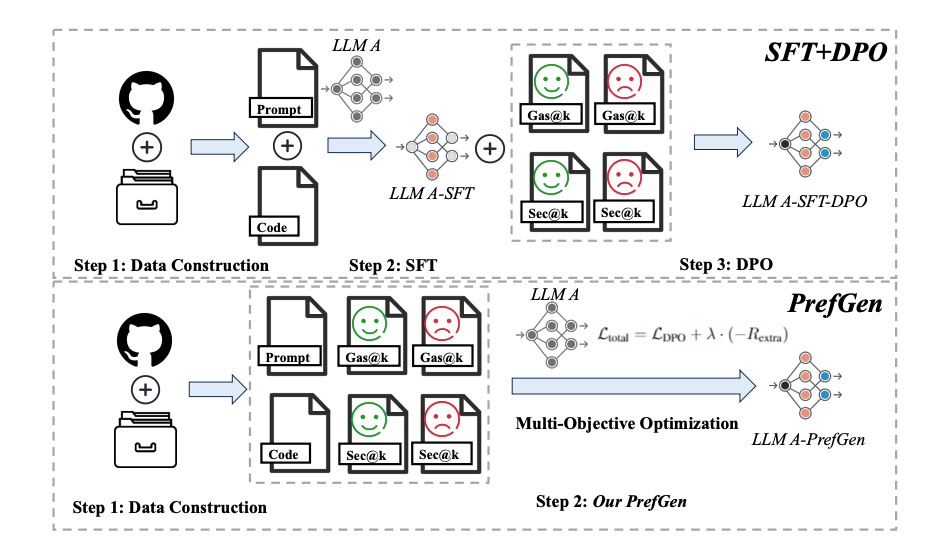
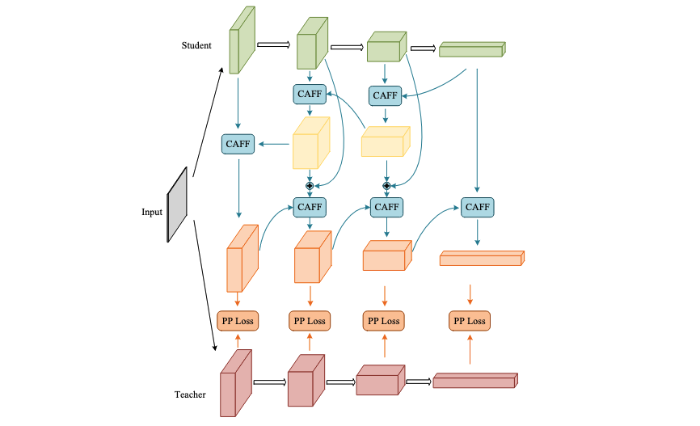
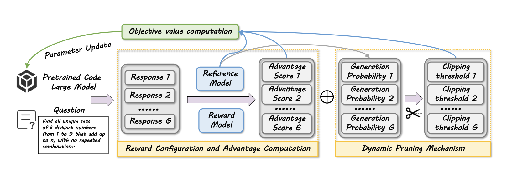
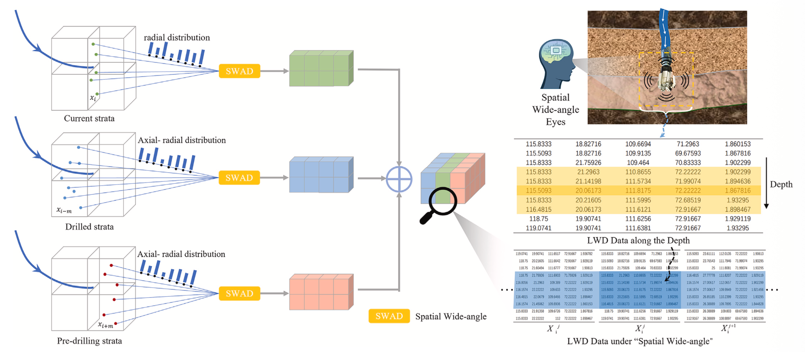
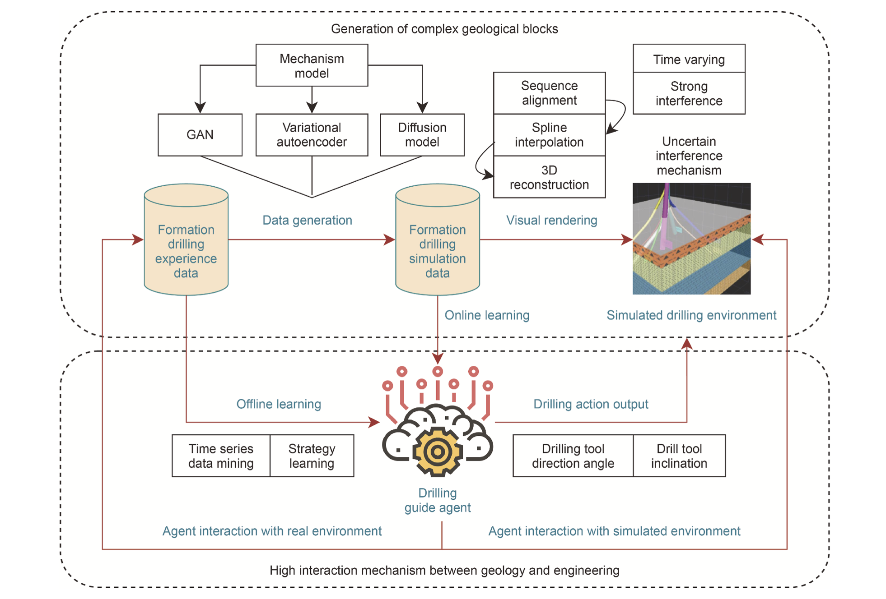

Zijie Zhou🌱 Master's Student
China University of Petroleum Beijing |
|


Biography
Hello! I am a final-year Master's student of Artificial Intelligence at China University of Petroleum (Beijing), under the supervision of Associate Professor Dandan Zhu. I completed my undergraduate degree in Artificial Intelligence at China University of Petroleum (Beijing) in 2023.
I have broad interests in:
- Efficient and Trustworthy Multimodal Agents
- Graph-enhanced Retrieval-Augmented Generation (RAG)
- Reinforcement Learning for LLM Optimization
News
- [03/2026] One paper has been accepted to ICME 2026 !
- [03/2026] One paper has been accepted to Geoenergy Science and Engineering (Journal) !
- [12/2025] One paper has been accepted to IEEE TAI (Journal) !
- [08/2025] One paper has been accepted to ASE 2025 !
- [08/2025] One paper has been accepted to Petroleum Science (Journal) !
- [07/2024] One paper has been accepted to ICANN 2024 !
Publications
| /*Preprint*/ | |
|
 |
PolarMem: A Training-Free Polarized Latent Graph Memory for Verifiable Multimodal Agents Zhisheng Chen*, Tingyu Wu*, Zijie Zhou*, Zhengwei Xie, Ziyan Weng, Yingwei Zhang ArXiv:2602.00415, 2026 |
|
 |
M3Prune: Hierarchical Communication Graph Pruning for Efficient Multi-Modal Multi-Agent Retrieval-Augmented Generation Weizi Shao*, Taolin Zhang*, Zijie Zhou, Chen Chen, Chengyu Wang, Xiaofeng Heg arXiv:2511.19969, 2025[paper] |
| /*Conference*/ | |
|
 |
ICPO: Illocution-Calibrated Policy Optimization for Multi-Turn Conversation Zhebo Wang, Xiaohu Mu, Zijie Zhou, Mohan Li, Wenpeng Xing, Dezhang Kong, Meng Han IEEE International Conference on Acoustics, Speech, and Signal Processing (ICASSP), 2026[paper] |
|
 |
PrefGen: A Preference-Driven Methodology for Secure Yet Gas-Efficient Smart Contract Generation Zhiyuan Peng, Xin Yin, Zijie Zhou, Chenhao Ying, Chao Ni, Yuan Luo In Proceedings of the 40th IEEE/ACM Automated Software Engineering Conference (ASE), 2025 |
|
 |
Small object detection based on bidirectional feature fusion and multi-scale distillation Lingyu Wang, Zijie Zhou, Guanqun Shi, Junkang Guo, Zhigang Liu The 33rd International Conference on Artificial Neural Networks (ICANN), 2024.(Oral Presentation) [paper] |
| /*Journal*/ | |
|
 |
A preference-driven methodology for efficient code generation Yuqi Li, Zijie Zhou, Zhiyuan Peng, Junhao Dong, Haochen You, Renye Yan, Shiping Wen, Yingli Tian, Tingwen Huang IEEE Transactions on Artificial Intelligence, 2025. |
|
 |
A novel directional drilling decision method based on 3D spatial wide-angle detection mechanism Hao Zhou, Dandan Zhu†, Zijie Zhou†, Xinping Dai, Liping Zhu, Junliang Yuan, Ke Zhang Geoenergy Science and Engineering, 2026.[paper] |
|
 |
An intelligent drilling guide algorithm design framework based on highly interactive learning mechanism Yi Zhao, Dandan Zhu, Fei Wang, Xinping Dai, Huishen Jiao, Zijie Zhou Petroleum Science, 2025.[paper] |
Professional Services
-
Program Committee (PC) Member:
ACM International Conference on Multimedia Retrieval (ICMR 2026) -
Reviewer:
IEEE International Conference on Multimedia and Expo (ICME 2026)